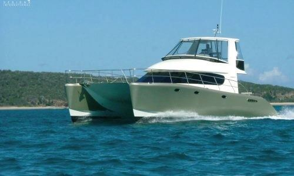
- 1986
- 200+
- 16 ha
- 60+
- 4
- 2
- 150 ft
- 40
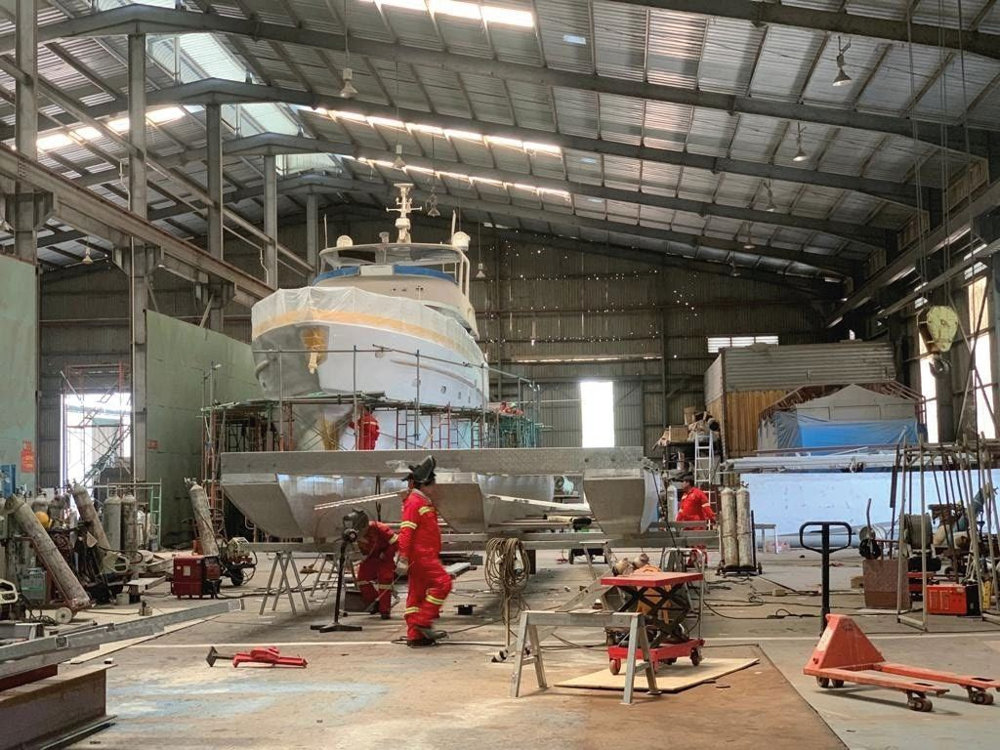
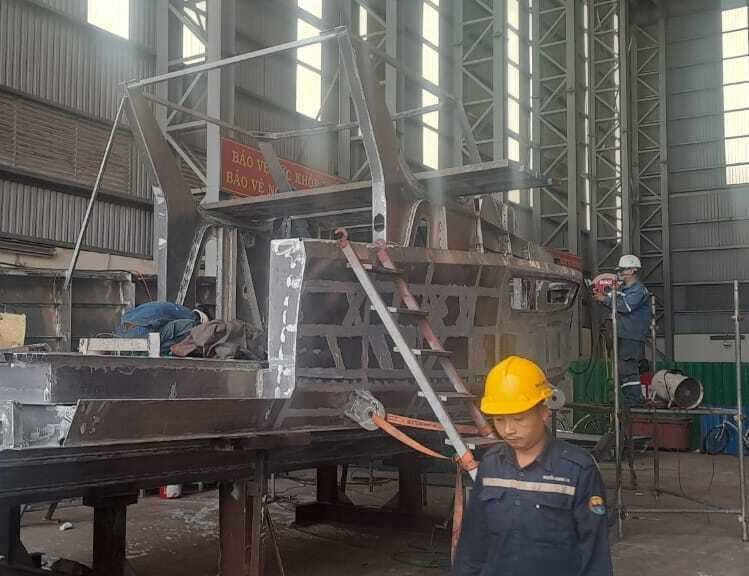
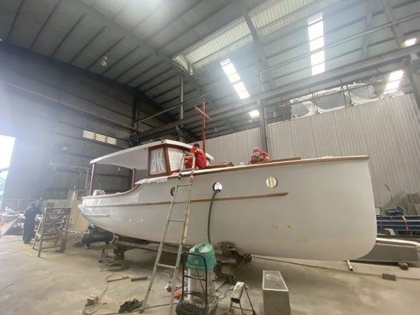
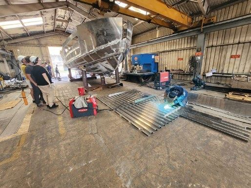
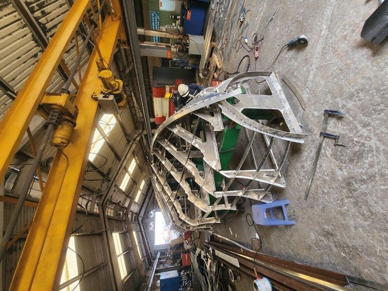
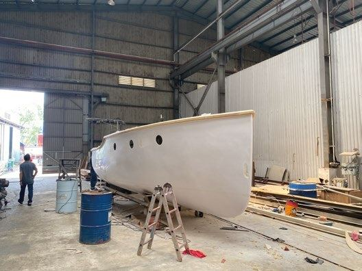
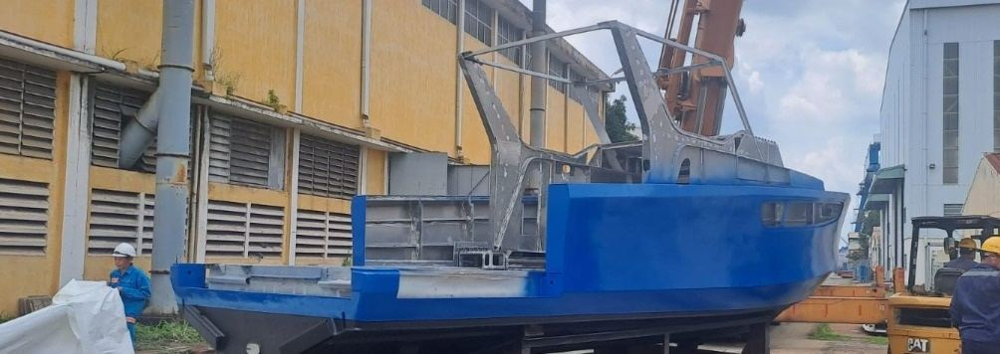
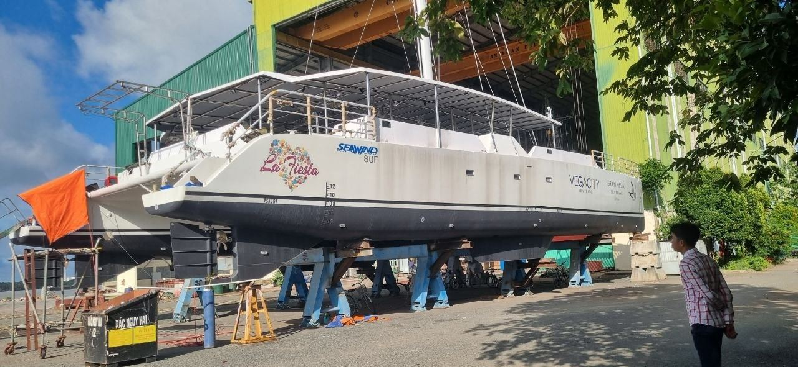
Seawind 80F
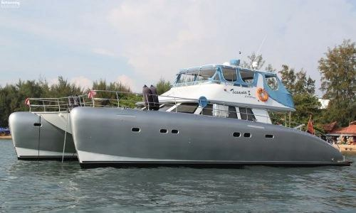
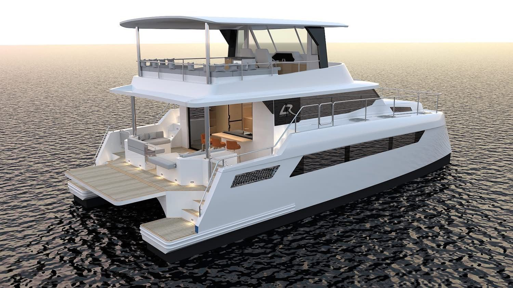
Calypso 44
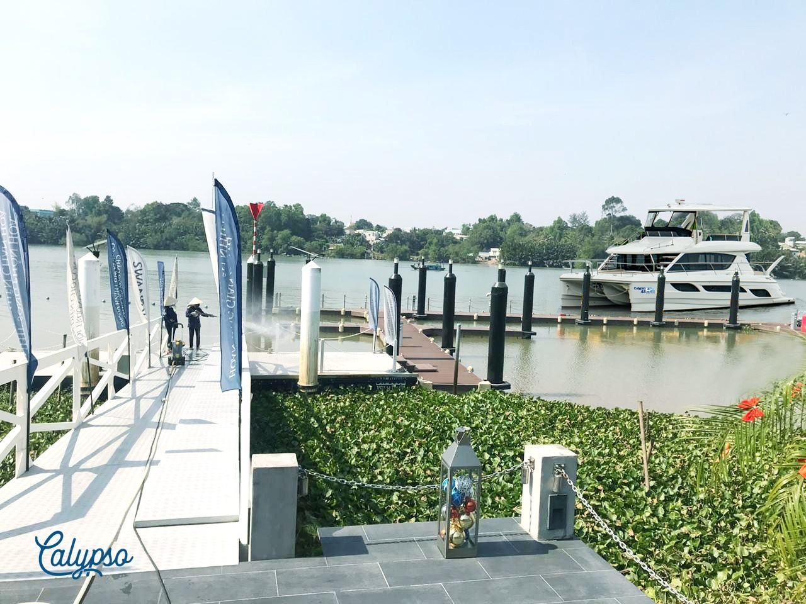
Calypso 48 Medusa
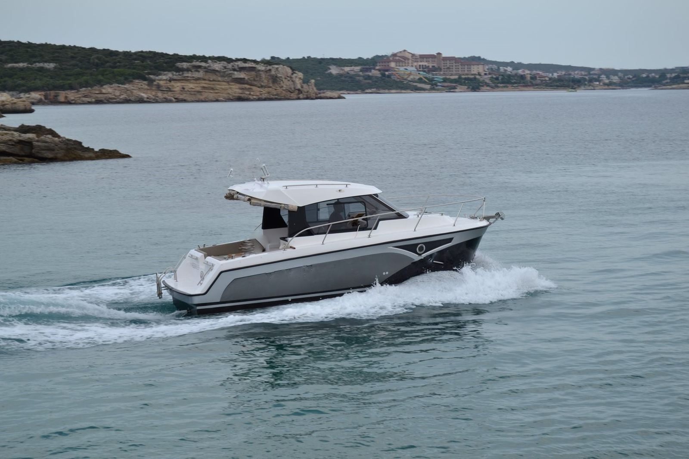
Calypso 920
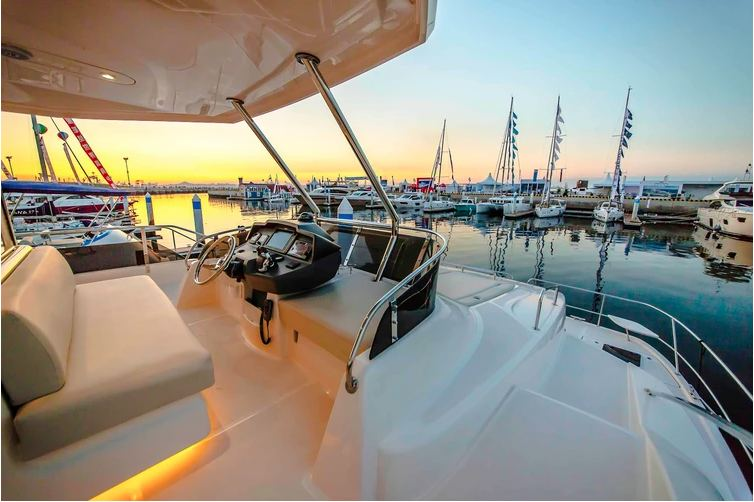
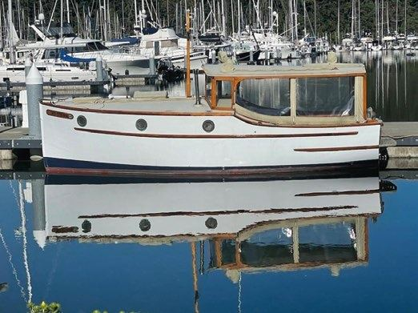
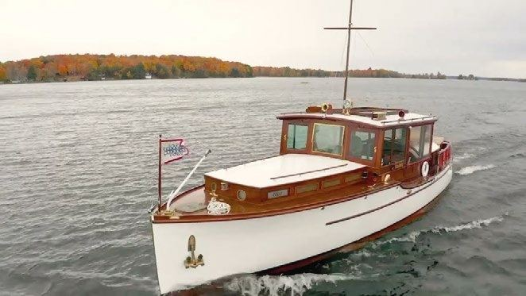
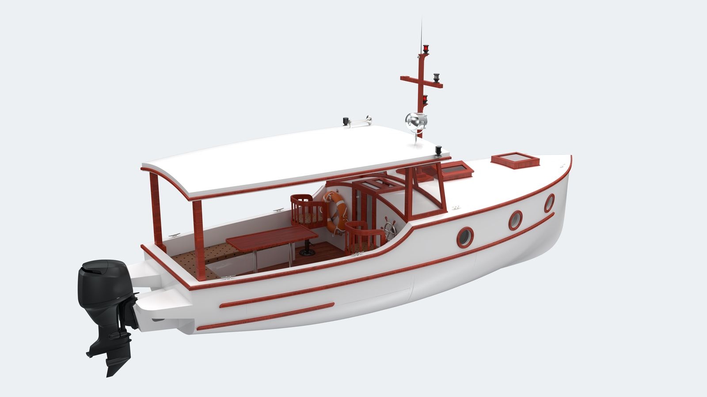
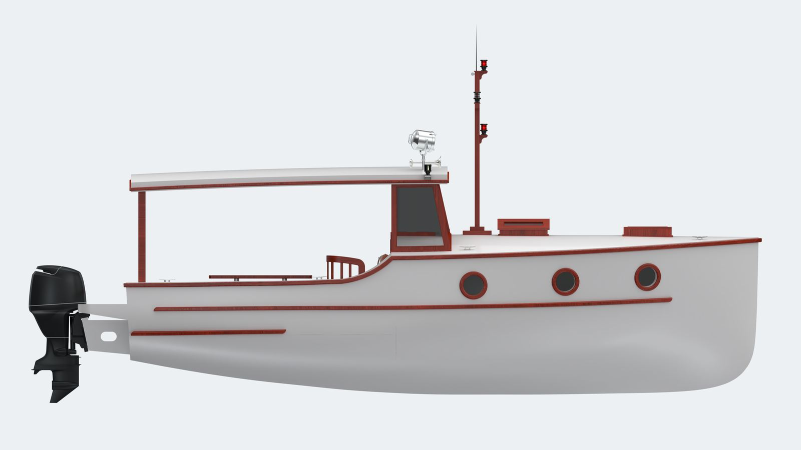
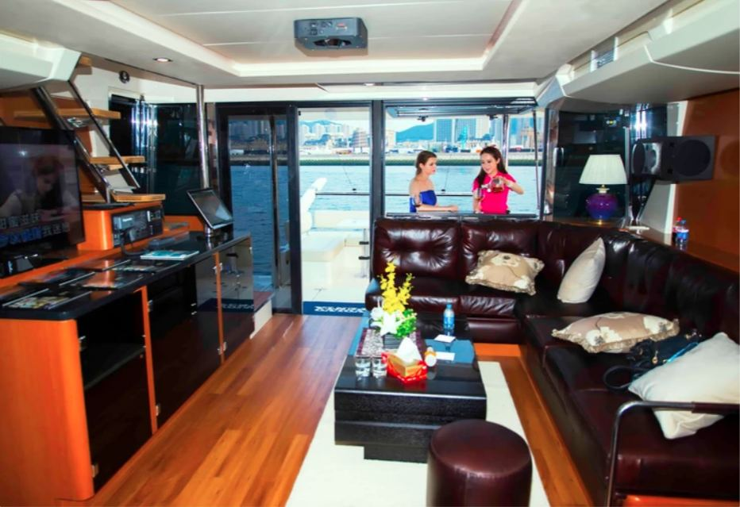
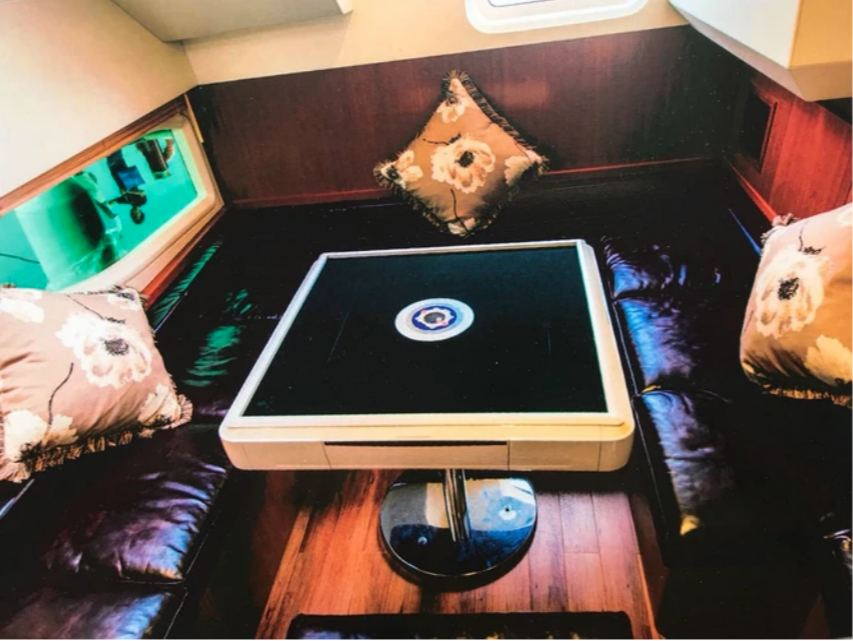
2 × 800 hp
40 kn
100 nm
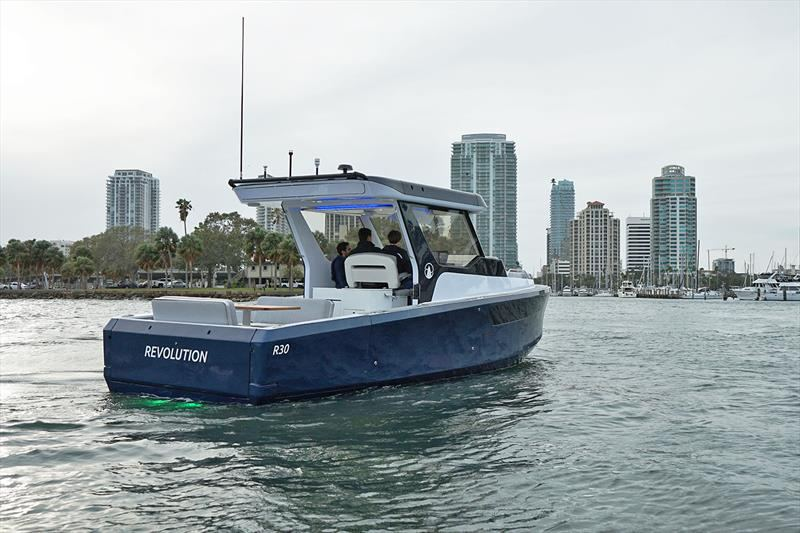
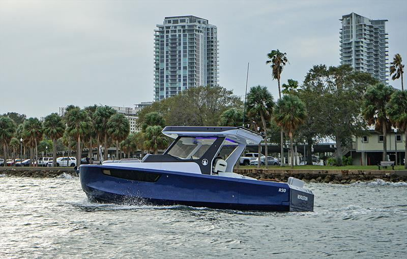
Email
info@saigonyacht.com
WhatsApp
+84 909 090 833
29 Nguyen Van Quy, Tan Thuan Dong Ward, District 7, Ho Chi Minh City, Vietnam
1042 Huynh Tan Phat, Phu Xuan Commune, Nha Be District, Ho Chi Minh City, Vietnam